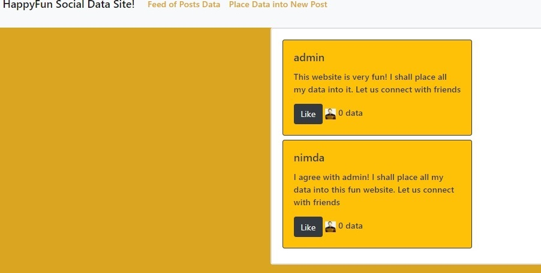

HappyFun Social Data Site!
HappyFun Social Data Site! is the front end of a social networking site, designed to answer the question: what if these sites were clear about what they get out of the deal? Created using React and React Bootstrap.

My new challenge in creating HappyFun Social Data Site! was:
-
Creating a like button that increases the number of likes when clicked.
To create the like button:
-
This required me to get a better understanding of the difference between State and Props in React (essentially, Props lets a component grab data from another component; State is for referencing and changing a component's own data.)
-
I needed that understanding because I had the function that displays a post in one component, and the class that contains posts in the main App component. This meant that the function that displays posts (and therefore the like button) had to refer to the number of likes using Props rather than State.
-
To actually change the number of likes, I had to learn how to break down every post into its component properties, then augment the number of likes by 1 for the post whose ID matched that of the post being liked.